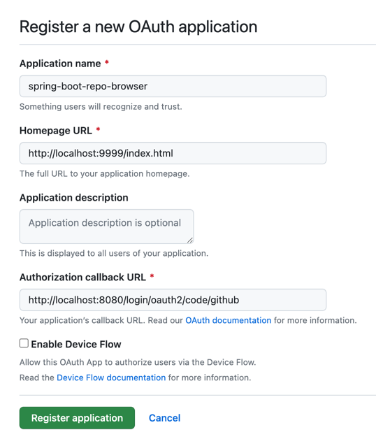
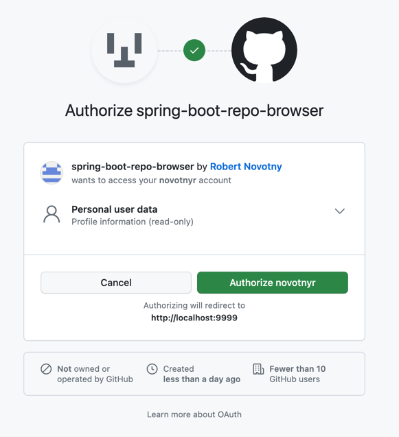

Ako zobraziť svoje vlastné repozitáre na GitHube cez REST API?
Ukážeme si:
-
ako pristúpiť k REST API Githubu
-
ako sa autentifikovať v aplikácii pomocou OAuth 2.0
-
ako vytvoriť na GitHube aplikáciu, ktorá vie získať používateľove údaje v jeho mene a to kontrolovaným spôsobom
-
ako implementovať klienta k REST API Githubu v Sprint Boote
REST API GitHubu
GitHub ponúka bohaté REST API a to vrátane dokumentácie.
To umožňuje budovať aplikácie, ktoré získavajú údaje o dôležitých entitách, napríklad:
-
repozitároch
-
organizáciách
-
tímoch
-
používateľoch
Autentifikácia
Ak chceme vytvoriť aplikáciu, ktorá dokáže získať repozitáre v mene používateľa (On Behalf Of), môžeme použiť OAuth.
GitHub ako platforma dokáže vystupovať:
-
v role autorizačného servera dostupného na https://github.com/
-
v role resource servera dostupného na https://api.github.com.
Naša aplikácia v Spring Boote bude v role klienta OAuth.
Registrácia aplikácie
Klienta zaregistrujme v autorizačnom serveri GitHub.
-
Navštívme https://github.com/settings/developers
-
Zvoľme Register a new application.
-
Vyplňme údaje.
-
Application name: názov aplikácie, ktorý sa objaví v UI pre používateľov
-
Homepage URL: cesta k domovskej stránke. Použijeme port 9999.
-
Authorization Callback URL: cesta, na ktorú presmeruje autorizačný server používateľov prehliadač po úspešnom prihlásení. Túto URL zabezpečí modul Springu. Rovnako použijeme port 9999.
-
-
Na prehľadovom okne získame:
-
Client ID: identifikátor klienta v OAuth
-
Client Secret: ten si nechajme jednorazovo vygenerovať.
-
Máme všetko, čo potrebujeme pre integráciu.
Tvorba aplikácie
Cez Spring Initializr vytvorme aplikáciu reprezentujúcu klienta OAuth 2, ktorá bude v mene prihláseného používateľa získavať informácie z resource servera (GitHub REST API) o repozitároch.
Použime:
-
OAuth 2 Client:
spring-boot-starter-oauth2-client -
Web:
spring-boot-starter-webpre naše vlastné REST API -
WebFlux:
spring-webfluxv ktorom sa nachádza klientská strana pre prístup k REST API GitHubu.
Konfiguračný súbor application.properties.
application.properties
server.port=9999 (1)
spring.security.oauth2.client.registration.github.client-id=a7923a1ba2a762dc5c6e (2)
spring.security.oauth2.client.registration.github.client-secret=eesuughu4Nahfogh4ahcietha (3)| 1 | Port, na ktorom pobeží naša aplikácia. Port sa objavil v registrácii aplikácie na GitHube! |
| 2 | Identifikátor klienta OAuth. |
| 3 | Tajomstvo medzi klientom a autorizačným serverom. |
| Spring OAuth 2 Client obsahuje automatické nastavenie pre známe autorizačné servery (GitHub, Facebook, Okta, Google). |
Volanie REST API GitHubu
Naša aplikácia bude prakticky proxy — zverejní REST API, ktoré zavolá REST API GitHubu.
Spring OAuth Client poskytuje podporu pre triedu WebClient a jej priamu integráciu s OAuth.
Takýto WebClient sa postará o správne získanie tokenov, ich aktualizáciu cez obnovovacie tokeny (refresh tokens).
WebClient je neblokujúca alternatíva k triede RestTemplate, ktorá bude v budúcich verziách Springu preferovanou možnosťou pre prístup k REST API.
|
@Bean
@Qualifier("github") (1)
WebClient webClient(ClientRegistrationRepository clientRegistrations,
OAuth2AuthorizedClientRepository authorizedClients) { (2)
var oauth = new ServletOAuth2AuthorizedClientExchangeFilterFunction(clientRegistrations, authorizedClients); (3)
oauth.setDefaultClientRegistrationId(CommonOAuth2Provider.GITHUB.name().toLowerCase()); (4)
return WebClient.builder()
.apply(oauth.oauth2Configuration()) (5)
.build();
}| 1 | Deklarujeme bean pre klienta. Aby sme ho obmedzili len na volania pre GitHub a neurobili ho globálny, dodáme mu kvalifikátor. Toto nie je povinná časť, ak máme v projekte len jedinú singleton inštanciu. |
| 2 | Budeme potrebovať:
|
| 3 | Vyrobíme funkciu, ktorá sa postará o technikálie OAuth2: získavanie tokenov, obnovu tokenov a asociovanie správnych hlavičiek. |
| 4 | Explicitne povieme, že táto funkcia sa vzťahuje len na klienta pre GitHub. |
| 5 | Nakonfigurujeme webklienta tak, aby sa riadil možnosťami OAuth. |
Teraz nastavme naše REST API.
Vytvorme klasický kontrolér pre REST API, ktorý bude „proxy“ovať volania na GitHub.
ApiController.java
@RestController
@RequestMapping("/api")
public class ApiController { (1)
private final WebClient webClient;
public ApiController(@Qualifier("github") WebClient webClient) { (2)
this.webClient = webClient;
}
@GetMapping("/repositories")
public List<Repository> getRepositories() {
String url = "https://api.github.com/user/repos?type=owner&since=2023-01-01T00:00:00Z";
return webClient.get()
.uri(url) (3)
.retrieve()
.bodyToFlux(Repository.class) (4)
.collectList()
.block(); (5)
}
}| 1 | Bežný kontrolér pre REST API. |
| 2 | Nechajme si cez autowiring dodať inštanciu webklienta pre GitHub. Nezabudnime na kvalifikátor! |
| 3 | Webklient použije HTTP GET a adresu URL pre REST API GitHubu. Táto adresa získa všetky repozitáre prihláseného používateľa. |
| 4 | Výsledok príde ako JSON, v podobe zoznamu objektov, ktoré namapujeme na náš vlastný záznam Repository (record) |
| 5 | Webklient je neblokujúci a reaktívny, ale my budeme blokovať, aby sme vrátili štandardný zoznam objektov. |
| Práca s webklientom je mimo záberu tohto článku. |
Záznam pre repozitár je jednoduchý — slúži len na to, aby sme odfiltrovali nepotrebné vlastnosti z JSONu.
Repository.java
public record Repository(String name, URL url) {
// empty body
}Otestovanie aplikácie
Navštívme cez prehliadač naše REST API na http://localhost:9999/api/repositories.
Spring Boot zistí, že ako používateľ nie som autentifikovaný, a ako vlastník zdrojov (OAuth Resource Owner) som neudelil súhlas klientskej aplikácii na prístup k údajom.
Presmeruje ma na adresu GitHubu, kde tento súhlas udelím:

Následne sa vykoná séria presmerovaní podľa grantu Authorization Code až sa prehliadač ocitne na pôvodnej adrese, ktorá zobrazí odfiltrovaný JSON.
[
{
"name": "akka-iot-2022",
"url": "https://api.github.com/repos/novotnyr/akka-iot-2022"
},
{
"name": "akka-wordfrequencies-2017",
"url": "https://api.github.com/repos/novotnyr/akka-wordfrequencies-2017"
},
...
]| Vidíme, ako sa o autorizáciu postaral Spring OAuth Client. V tejto chvíli náš klient pristupuje k údajom prihláseného používateľa v jeho mene. |
| Ak by sme neboli prihlásení na GitHube, uvidíme ešte prihlasovací formulár GitHubu. Ako používateľ totiž musím byť autentifikovaný oproti autorizačnému serveru. |
Zdroje
Zdrojový projekt je na GitHube v repozitári novotnyr/github-oauth-client-spring-boot.
|